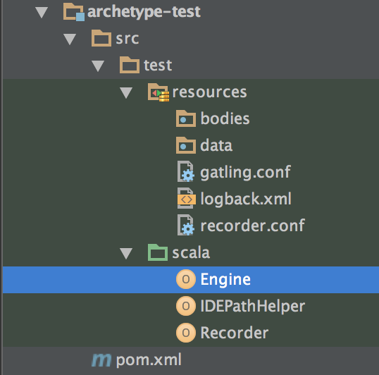

Gatling’s Maven Archetype allows you to integrate Gatling and run it into your preferred IDE.
Versions¶
Check out available versions on Maven Central <http://search.maven.org/#search%7Cgav%7C1%7Cg%3A%22io.gatling.highcharts%22%20AND%20a%3A%22gatling-highcharts-maven-archetype%22>.
Beware that milestones (M versions) are undocumented and releases for Gatling customers.
Creating a project using the Archetype¶
The Maven’s coordinates for the archetype are io.gatling.highcharts:gatling-highcharts-maven-archetype.
You can either use your IDE’s facilities for creating a new project using a Maven archetype or, from the command line, type:
mvn archetype:generate
Then, when prompted:
Choose a number or apply filter (format: [groupId:]artifactId, case sensitive contains):
Type gatling. You should then see:
Choose archetype:
1: remote -> io.gatling.highcharts:gatling-highcharts-maven-archetype (gatling-highcharts-maven-archetype)
Type 1 to select the archetype, then select the version to use (We recommend to always use the latest version.
Select the groupId, artifactId and package name for your classes before confirming the archetype creation.
Finish by importing the archetype into your preferred IDE.
Using the Archetype¶
After importing the project, its structure should look like that:
The archetype structure closely follows the bundle’s structure :
datais where the files for your feeders are to be storedbodiesis where your request bodies are to be stored- Your simulations will live under
src/test/scala
Running Gatling¶
Simply launch the Engine class in your IDE.
Simulation reports will be written in the target directory.
Running the Recorder¶
Simply launch the Recorder class in your IDE.
Simulations will be generated in the src/test/scala directory.